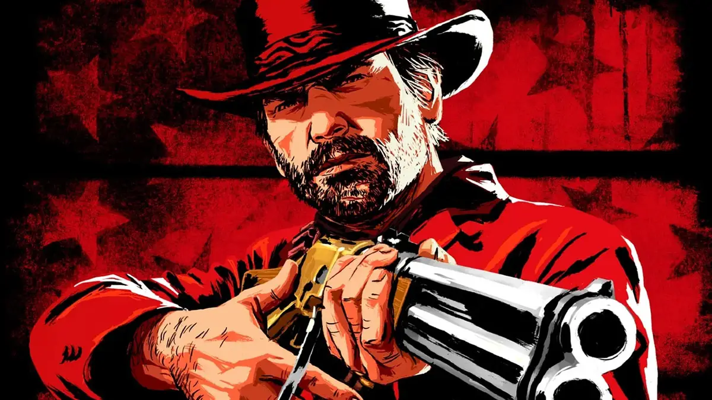

I'm a final-year student at Punjab Engineering College. My expertise lies in Artificial Intelligence, Machine Learning, and Web Development.
I have a strong passion for creating innovative solutions that combine technology with creativity.
My recent projects include music sequence generation using RNNs, stock price forecasting with LSTMs, and web-based hotel management systems.
Outside of coding, I enjoy exploring sci-fi movies and binge-watching thrilling series like Squid Game.
I have a deep appreciation for open-world games such as GTA, Red Dead Redemption 2, and Assassin's Creed. These games are visually stunning and provide an immersive experience with their expansive worlds and intricate storylines. The challenges they present, combined with the freedom to explore, are what draw me in.
In addition to gaming, I enjoy playing chess. Chess is a game that requires strategic thinking, patience, and foresight, which helps sharpen my problem-solving skills—skills I apply in my development projects.